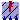
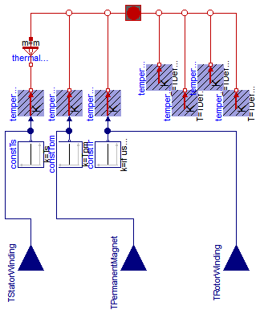
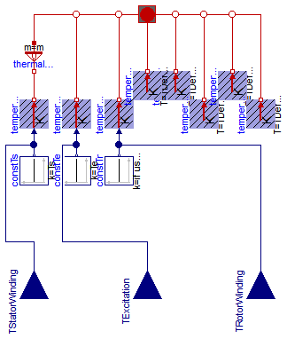

Extends from Modelica.Icons.VariantsPackage (Icon for package containing variants).
| Name | Description |
|---|---|
|  ThermalAmbientSMPM | Thermal ambient for synchronous induction machine with permanent magnets |
| ThermalAmbientSMEE | Thermal ambient for synchronous induction machine with electrical excitation |
| Thermal ambient for synchronous induction machine with reluctance rotor |

Extends from Machines.Interfaces.InductionMachines.PartialThermalAmbientInductionMachines (Partial thermal ambient for induction machines).
| Type | Name | Default | Description |
|---|---|---|---|
| Boolean | useDamperCage | Enable / disable damper cage | |
| Integer | m | 3 | Number of phases |
| Boolean | useTemperatureInputs | false | If true, temperature inputs are used; else, temperatures are constant |
| Temperature | Ts | Temperature of stator windings [K] | |
| Temperature | Tpm | Temperature of permanent magnet [K] | |
| Temperature | Tr | Temperature of damper cage (optional) [K] |
| Type | Name | Description |
|---|---|---|
| input RealInput | TStatorWinding | Temperature of stator windings |
| input RealInput | TRotorWinding | Temperature of damper cage (optional) |
| input RealInput | TPermanentMagnet | Temperature of permanent magnet |
model ThermalAmbientSMPM
"Thermal ambient for synchronous induction machine with permanent magnets"
import Modelica;
parameter Boolean useDamperCage(start = true) "Enable / disable damper cage";
extends Machines.Interfaces.InductionMachines.PartialThermalAmbientInductionMachines
(redeclare final Machines.Interfaces.InductionMachines.ThermalPortSMPM
thermalPort(final useDamperCage = useDamperCage));
parameter Modelica.SIunits.Temperature Tpm(start=TDefault)
"Temperature of permanent magnet";
parameter Modelica.SIunits.Temperature Tr(start=TDefault)
"Temperature of damper cage (optional)";
output Modelica.SIunits.HeatFlowRate Q_flowRotorWinding = temperatureRotorWinding.port.Q_flow
"Heat flow rate of damper cage (optional)";
output Modelica.SIunits.HeatFlowRate Q_flowPermanentMagnet = temperaturePermanentMagnet.port.Q_flow
"Heat flow rate of permanent magnets";
output Modelica.SIunits.HeatFlowRate Q_flowTotal=
Q_flowStatorWinding + Q_flowRotorWinding + Q_flowPermanentMagnet + Q_flowStatorCore + Q_flowRotorCore + Q_flowStrayLoad + Q_flowFriction;
Modelica.Thermal.HeatTransfer.Sources.PrescribedTemperature temperatureRotorWinding;
Modelica.Blocks.Interfaces.RealInput TRotorWinding if
(useTemperatureInputs and useDamperCage)
"Temperature of damper cage (optional)";
Modelica.Blocks.Sources.Constant constTr(final k=if useDamperCage then Tr else TDefault) if
(not useTemperatureInputs or not useDamperCage);
Modelica.Thermal.HeatTransfer.Sources.PrescribedTemperature temperaturePermanentMagnet;
Modelica.Blocks.Sources.Constant constTpm(final k=Tpm) if (not useTemperatureInputs);
Modelica.Blocks.Interfaces.RealInput TPermanentMagnet if
(useTemperatureInputs and useDamperCage) "Temperature of permanent magnet";
equation
connect(constTr.y, temperatureRotorWinding.T);
connect(temperatureRotorWinding.port, thermalPort.heatPortRotorWinding);
connect(TRotorWinding, temperatureRotorWinding.T);
connect(temperaturePermanentMagnet.port, thermalPort.heatPortPermanentMagnet);
connect(constTpm.y, temperaturePermanentMagnet.T);
connect(TPermanentMagnet, temperaturePermanentMagnet.T);
end ThermalAmbientSMPM;

Extends from Machines.Interfaces.InductionMachines.PartialThermalAmbientInductionMachines (Partial thermal ambient for induction machines).
| Type | Name | Default | Description |
|---|---|---|---|
| Boolean | useDamperCage | Enable / disable damper cage | |
| Integer | m | 3 | Number of phases |
| Boolean | useTemperatureInputs | false | If true, temperature inputs are used; else, temperatures are constant |
| Temperature | Ts | Temperature of stator windings [K] | |
| Temperature | Tr | Temperature of damper cage (optional) [K] | |
| Temperature | Te | Temperature of excitation [K] |
| Type | Name | Description |
|---|---|---|
| input RealInput | TStatorWinding | Temperature of stator windings |
| input RealInput | TRotorWinding | Temperature of damper cage (optional) |
| input RealInput | TExcitation | Temperature of excitation |
model ThermalAmbientSMEE
"Thermal ambient for synchronous induction machine with electrical excitation"
parameter Boolean useDamperCage(start = true) "Enable / disable damper cage";
extends Machines.Interfaces.InductionMachines.PartialThermalAmbientInductionMachines
(redeclare final Machines.Interfaces.InductionMachines.ThermalPortSMEE
thermalPort(final useDamperCage = useDamperCage));
parameter Modelica.SIunits.Temperature Tr(start=TDefault)
"Temperature of damper cage (optional)";
parameter Modelica.SIunits.Temperature Te(start=TDefault)
"Temperature of excitation";
output Modelica.SIunits.HeatFlowRate Q_flowRotorWinding = temperatureRotorWinding.port.Q_flow
"Heat flow rate of damper cage (optional)";
output Modelica.SIunits.HeatFlowRate Q_flowExcitation = temperatureExcitation.port.Q_flow
"Heat flow rate of excitation";
output Modelica.SIunits.HeatFlowRate Q_flowTotal=
Q_flowStatorWinding + Q_flowRotorWinding + Q_flowExcitation + Q_flowStatorCore + Q_flowRotorCore + Q_flowStrayLoad + Q_flowFriction;
Modelica.Thermal.HeatTransfer.Sources.PrescribedTemperature temperatureRotorWinding;
Modelica.Blocks.Interfaces.RealInput TRotorWinding if
(useTemperatureInputs and useDamperCage)
"Temperature of damper cage (optional)";
Modelica.Blocks.Sources.Constant constTr(final k=if useDamperCage then Tr else TDefault) if (not useTemperatureInputs or not useDamperCage);
Modelica.Thermal.HeatTransfer.Sources.PrescribedTemperature temperatureExcitation;
Modelica.Blocks.Interfaces.RealInput TExcitation if
useTemperatureInputs
"Temperature of excitation";
Modelica.Blocks.Sources.Constant constTe(final k=Te) if not useTemperatureInputs;
Modelica.Thermal.HeatTransfer.Sources.FixedTemperature temperatureBrush(final T=
TDefault);
equation
connect(constTr.y, temperatureRotorWinding.T);
connect(temperatureRotorWinding.port, thermalPort.heatPortRotorWinding);
connect(TRotorWinding, temperatureRotorWinding.T);
connect(constTe.y, temperatureExcitation.T);
connect(TExcitation, temperatureExcitation.T);
connect(temperatureExcitation.port, thermalPort.heatPortExcitation);
connect(temperatureBrush.port, thermalPort.heatPortBrush);
end ThermalAmbientSMEE;

Extends from Machines.Interfaces.InductionMachines.PartialThermalAmbientInductionMachines (Partial thermal ambient for induction machines).
| Type | Name | Default | Description |
|---|---|---|---|
| Boolean | useDamperCage | Enable / disable damper cage | |
| Integer | m | 3 | Number of phases |
| Boolean | useTemperatureInputs | false | If true, temperature inputs are used; else, temperatures are constant |
| Temperature | Ts | Temperature of stator windings [K] | |
| Temperature | Tr | Temperature of damper cage (optional) [K] |
| Type | Name | Description |
|---|---|---|
| input RealInput | TStatorWinding | Temperature of stator windings |
| input RealInput | TRotorWinding | Temperature of damper cage (optional) |
model ThermalAmbientSMR
"Thermal ambient for synchronous induction machine with reluctance rotor"
parameter Boolean useDamperCage(start = true) "Enable / disable damper cage";
extends Machines.Interfaces.InductionMachines.PartialThermalAmbientInductionMachines
(redeclare final Machines.Interfaces.InductionMachines.ThermalPortSMR
thermalPort(final useDamperCage = useDamperCage));
parameter Modelica.SIunits.Temperature Tr(start=TDefault)
"Temperature of damper cage (optional)";
output Modelica.SIunits.HeatFlowRate Q_flowRotorWinding = temperatureRotorWinding.port.Q_flow
"Heat flow rate of damper cage (optional))";
output Modelica.SIunits.HeatFlowRate Q_flowTotal=
Q_flowStatorWinding + Q_flowRotorWinding + Q_flowStatorCore + Q_flowRotorCore + Q_flowStrayLoad + Q_flowFriction;
Modelica.Thermal.HeatTransfer.Sources.PrescribedTemperature temperatureRotorWinding;
Modelica.Blocks.Interfaces.RealInput TRotorWinding if
(useTemperatureInputs and useDamperCage)
"Temperature of damper cage (optional)";
Modelica.Blocks.Sources.Constant constTr(final k=if useDamperCage then Tr else TDefault) if (not useTemperatureInputs or not useDamperCage);
equation
connect(constTr.y, temperatureRotorWinding.T);
connect(temperatureRotorWinding.port, thermalPort.heatPortRotorWinding);
connect(TRotorWinding, temperatureRotorWinding.T);
end ThermalAmbientSMR;